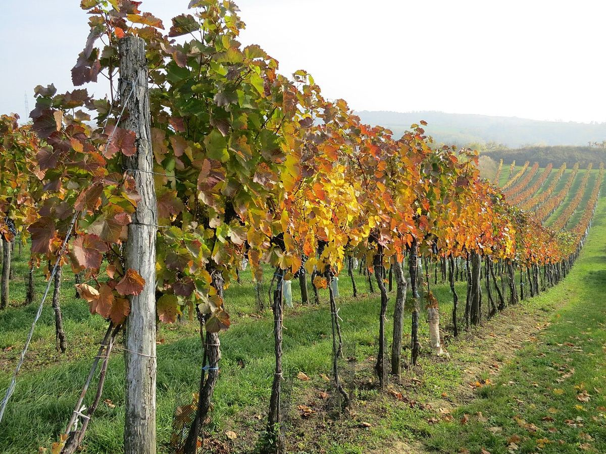

Weinviertel
The Weinviertel (“wine quarter”) is Austria’s largest wine region and stretches north of Vienna to the Czech and Slovak borders. It was the country’s first DAC and is known for its fresh, peppery Grüner Veltliner.

History
The Weinviertel owes its name to the historic division of Lower Austria into four “quarters”, of which this one, in the north-east, was the one devoted to wine. Winegrowing has been part of the region’s rural life for centuries, and one of its most characteristic features is the Kellergassen, lanes of cellars dug into the loess slopes, often outside the villages, where growers made and stored their wine. Many of these lanes survive today and are part of the region’s rural heritage and an attraction for visitors. For a long time the Weinviertel produced mainly bulk wine and base wine for sparkling wine. In the early 2000s it became the first Austrian region with a DAC designation, initially reserved for dry Grüner Veltliner with a fresh, peppery profile; this launched the system of appellations based on typical styles that now applies to much of the country.
Territory and climate
The region covers a broad landscape of gentle hills, farmland and forests between the Danube to the south and the borders with the Czech Republic and Slovakia to the north and east. The climate is continental and dry, with warm summers and cold winters; in the west the cool influence of the Waldviertel is more marked, while in the east the Pannonian climate can already be felt. Well-known wine villages include Poysdorf, Falkenstein, Mailberg, Retz and Wolkersdorf.
Soils
Loess predominates, covering much of the region in often thick layers, and is very well suited to Grüner Veltliner. There are also areas of clay, sand and gravel, limestone outcrops, as around Falkenstein, and granite soils in the west, near Retz.
Grapes and styles
Grüner Veltliner occupies a large part of the vineyard area and is the basis of the Weinviertel DAC; its typical regional style is fresh and fruity, with the white-pepper note known in Austria as Pfefferl. The DAC also includes fuller-bodied reserve wines. Welschriesling, Riesling, Weissburgunder, Pinot Gris and Sauvignon Blanc are also grown among the whites, and Zweigelt and Blauer Portugieser among the reds. The region remains an important source of base wine for Austrian Sekt. Wines from varieties other than Grüner Veltliner are sold under the Niederösterreich designation.